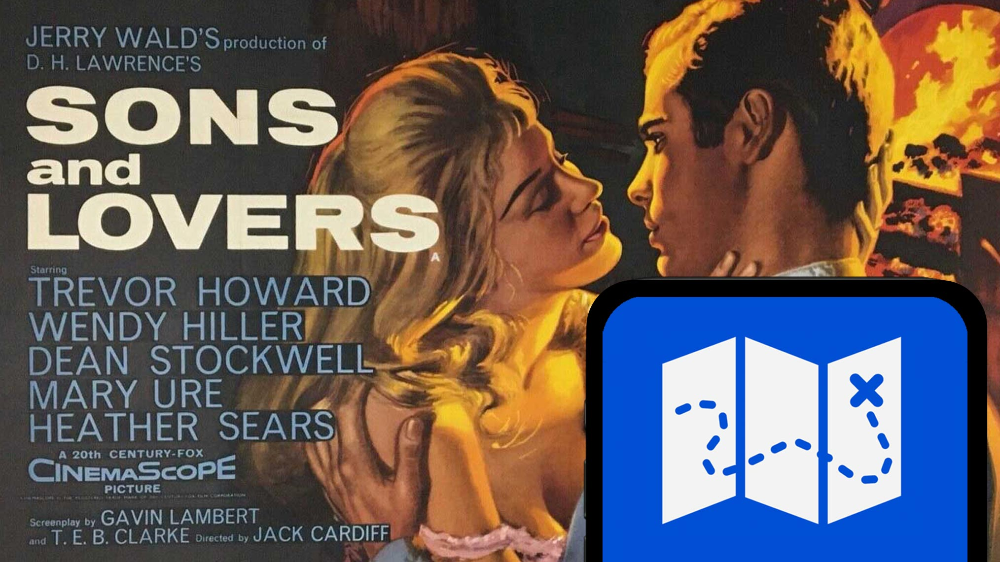
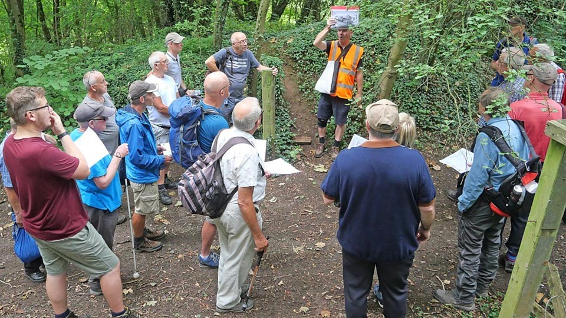
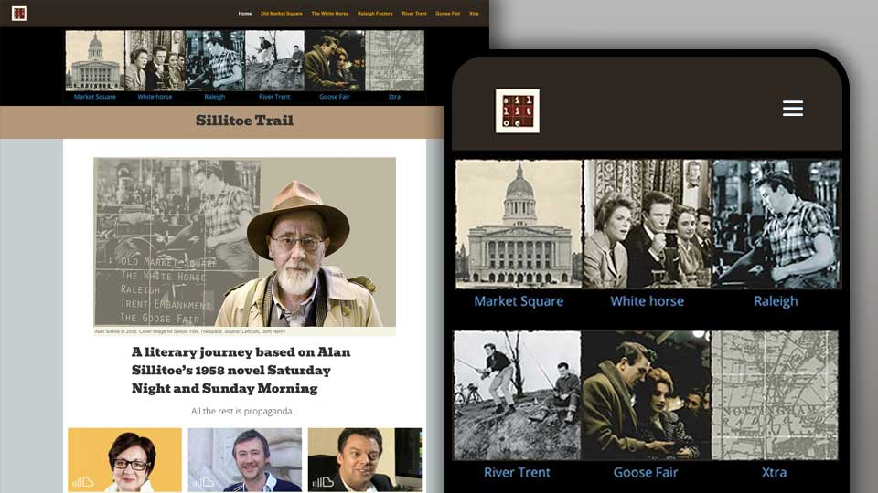
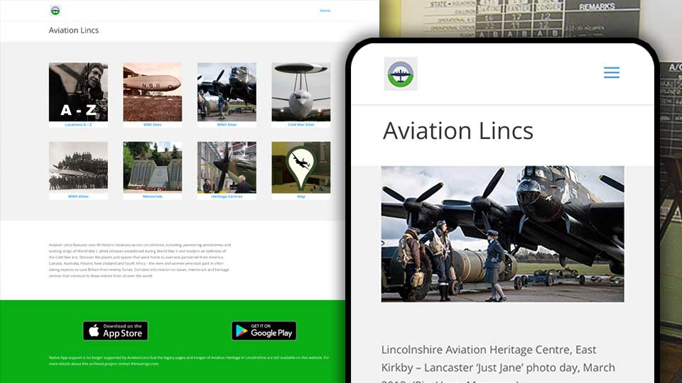
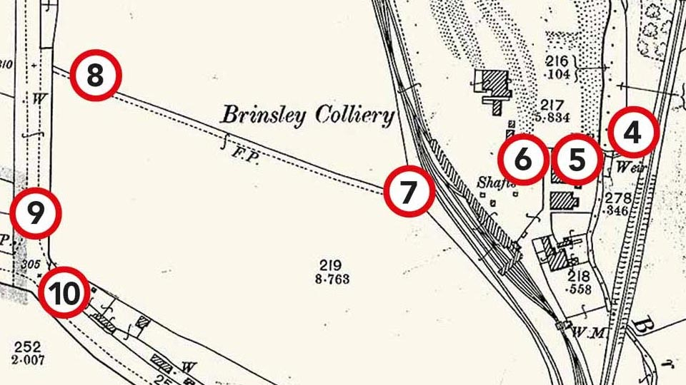
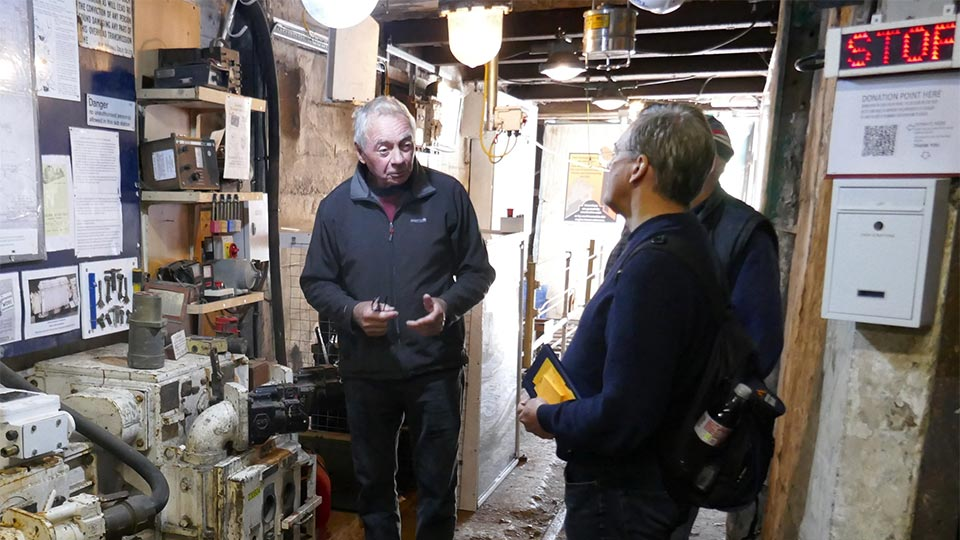

A trail for sons and lovers
Feature - Paul Fillingham, November 2023
The annual D.H. Lawrence literary festival was an opportunity to launch MyTrail.co.uk the new cultural heritage digital trail platform from Thinkamigo.
MyTrail grew from our popular WordPress websites Kirkby Steam and Mining Heritage. Both local industrial heritage websites enjoy high-traffic volume and offer dynamic content including news and events for their respective communities within the East Midlands.

Events listed on these industrial heritage sites include guided walking trails, and it was only a matter of time before we began to develop digital trails that could be accessed at any time by enthusiasts, tourists, and casual weekend visitors on their mobile phones.
Thinkamigo have developed location-based interpretation apps in the past - notably the Sillitoe Trail - a literary trail supported by Arts Council England and the BBC. The project, which engaged over 70 creative practitioners over an 18 month period was launched at Nottingham Contemporary and showcased in a BBC documentary. It was also one of fifty cultural projects to be featured on The Space Arts - experimental on-demand digital arts platform, alongside the Shakespeare Globe Theatre, the John Peel Archive and other national arts projects.

Sillitoe Trail, developed with James Walker and the Alan Sillitoe Memorial Committee as a homage to one of Nottingham's best-known rebel writers, was an important case study in support of Nottingham's bid as a UNESCO City of Literature. The project was also recognised as an exemplar of Arts Council Funded projects in presentations at Sheffield's annual Doc Fest, and at Google HQ, Central St Giles, London. To this day the Sillitoe Trail is referenced by fresh generations of literary scholars and people interested in post-war cinema and working class culture.

Thinkamigo has a long association with aviation in the East Midlands, working with Newark Air Museum and later developing the AviationLincs website and mobile apps for Aviation Heritage Lincolnshire - a cultural trail covering around 80 aviation sites connected to first world war pioneer aviators, allied forces during WWII, and subsequent cold war and operational RAF bases.
Before Thinkamigo, I provided training and design services for companies based on the East Midlands Airport estate, including pioneering work on the very first internet-based airline booking service - British Midland Cyberseat. I was also lucky enough to buzz around East Midlands airspace in a light aircraft a few times too!

MyTrail is informed by the lessons learned whilst developing earlier locative media projects. We use embedded What3Words and Google Maps to get visitors to the start of each trail, then offer turn-by-turn navigation using custom-built historic maps that present images, audio, video, and transcripts at each stage of the journey. The content is economic and not overbearing, and we take care in reducing cognitive load during stages of a trail where the user needs to be more alert to their immediate surroundings (for example, where there is traffic), and increase the amount of content where there is more space and time for contemplation - readings and music are particularly powerful in this context.
The Brinsley Circular trail, designed with long-time amigo David Amos (Mine2Minds Heritage Officer), is focussed on the place D.H. Lawrence referred to as 'the country of my heart'. This cultural heritage digital trail, emphasises the area's literary links, introducing visitors to now green spaces that were once the sprawling coal yards and railway lines that inspired works like 'Women in Love', 'Sons and Lovers', 'The Rainbow' and 'The Widowing of Mrs Holroyd.' The Brinsley Circular provides interpretation of key artefacts and landscape features along the relatively flat 40-minute walking route and also includes an accessible route for visitors with limited mobility, along with details of local amenities suitable for families with children. Video content is also presented in transcript form for silent operation.
MyTrail brings history to life through the power of digital storytelling in a mobile friendly format that is compelling, familiar, and easy to use.
Launching The Brinsley Circular at the D.H. Lawrence Festival gave our team valuable insight through user-feedback on how the MyTrail platform works on location, and helped simplify the process of designing and delivering future projects. At the time of writing, there are five new trails being developed for the MyTrail platform, including a schools' title aimed at Key Stage 2-3 students.

MyTrail promotional packs include branded QR-codes that can be attached to interpretation boards, posters, flyers, signage or exhibits ready for contactless scanning with mobile phones. Visitors can then playback media clips or time-limited landing pages for special events, promotions or nearby businesses and attractions.